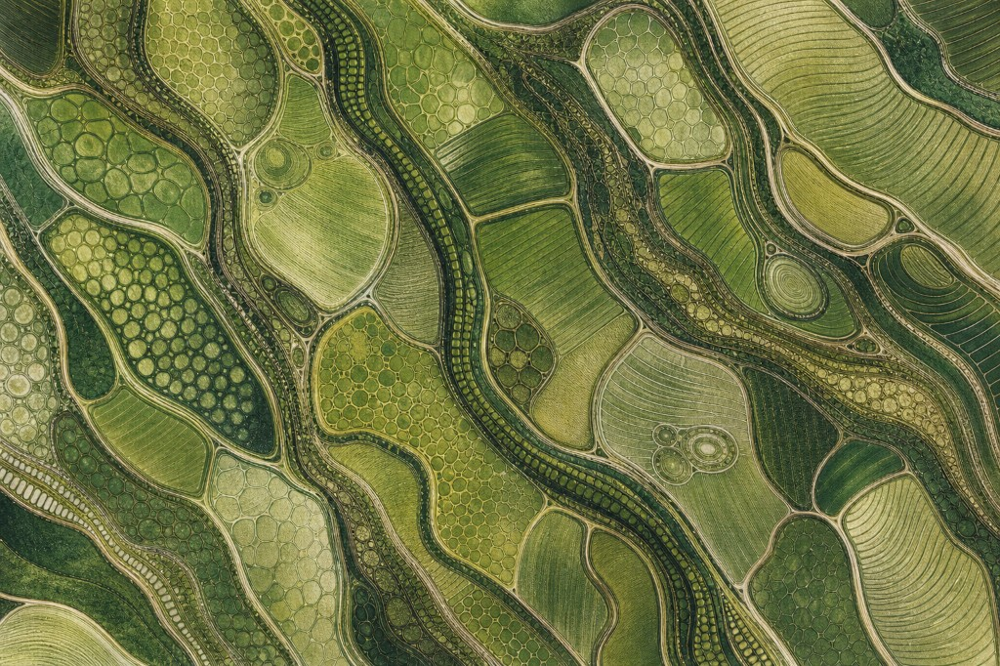

Network coordination
Build the trust and rhythms that let networks move together
Regenerative transitions are, above all, coordination problems. We build the relational and organizational infrastructure that makes sustained collaboration possible.
-
Program facilitation & network accompaniment
We facilitate multi-stakeholder processes, governance design, and network convenings — the shared rhythms that keep decisions moving, newcomers oriented, and friction from turning into fracture when too many relationships sit on one group.
-
Process alignment & automation
We map and align workflows across a network — funding pipelines, application tracking, governance handoffs — and automate only where it actually cuts coordination tax instead of adding another layer.